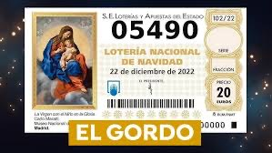

Španělská vánoční loterie El Gordo není jen losování čísel. Je to společenská událost, tradice starší než většina moderních států a emoce, které každoročně sledují miliony lidí. Jak vznikla, jak funguje a proč kvůli ní lidé cestují přes půl Španělska?
Co to vlastně je?
El Gordo je největší loterie na světě podle celkového objemu vyplacených výher (total prize pool). Každý rok se v El Gordu rozdělí zhruba 2,5 miliardy eur. To je víc než u jakékoli jiné loterie na světě – včetně amerických.
Jak to celé vzniklo
První losování proběhlo už v roce 1812, uprostřed války proti Napoleonovi. Cílem bylo získat peníze do státní pokladny. Od té doby se z loterie stal národní rituál, který přežil monarchii, republiku, diktaturu i demokracii.
Název „El Gordo" (Tlusťoch) označuje hlavní výhru, nikoli samotnou loterii.
Jak to funguje
Losování se koná vždy 22. prosince v 9:00 ráno a trvá několik hodin. Probíhá v národním divadle Teatro Real v Madridu a má přísná pravidla:
- V osudí je 100 000 čísel (00000–99999)
- Každé číslo existuje v mnoha sériích
- Základní jednotkou není celý los, ale décimo (desetina losu)
- Cena jednoho décima je 20 €
Díky tomu si lidé často kupují jen část čísla a výhru pak sdílí – s rodinou, kolegy, sousedy nebo celou vesnicí.
Děti, které vyzpívají výherní čísla
Jedním z nejikoničtějších momentů jsou děti z madridské základní školy Colegio de San Ildefonso, které zpívají vylosovaná čísla a výhry. Je to tradice, která sahá až do 18. století. Zpěv je přesně daný, monotónní a okamžitě rozpoznatelný. Pro Španěly je to zvuk začátku Vánoc. Mnoho lidí má losování puštěné jen jako kulisu, podobně jako pohádky u nás.
Letošní (včerejší) losování můžete shlédnout zde: https://www.youtube.com/watch?v=3OmetMj4VcU
Kolik je ve hře – a kolik lidí vyhrává?
Celkový objem výher je kolem 2,5 miliardy €.
El Gordo (hlavní výhra): 4 miliony € na celé číslo, tj. 400 000 € na jedno décimo.
Výherních je více než 15 000 čísel. Vyhrává zhruba každý čtvrtý los.
Typické jsou menší, ale časté výhry, proto Španělé říkají:
„Nejde o to vyhrát hodně, ale vyhrát společně."
Jak to Španělé sledují a prožívají
V kancelářích se přestává pracovat, v barech běží přímý přenos a rodiny sledují losování doma od stolu nebo z gauče. Jakmile padne „jejich" číslo, šampaňské teče proudem.
A když nepadne? „Aspoň zdraví... a že to zkusíme zase příští rok." 🙂
Je to vtipné, ale je to tak – aneb loterijní turistika
Ve Španělsku existuje i loterijní turistika – lidé cestují do míst „která nosí štěstí".
Nejslavnějším je katalánské městečko Sort: jeho jméno znamená „štěstí" (v katalánštině). Nachází se zde slavná loterijní kancelář La Bruixa d'Or. Každý rok sem míří tisíce lidí koupit si los „pro jistotu". Tlusťoch tu sice nikdy nepadnul, ale opakovaně se tu prodávají losy, které přinesly vysoké výhry (druhé, třetí ceny a tisíce menších výher). Paradoxně právě to živí jeho legendu ještě víc – lidé tam jezdí „pro štěstí", ne proto, že by tam statisticky vyhráli víc. Je to typický příklad španělské loterijní mentality: rituál, naděje a atmosféra jsou důležitější než matematika.
A na závěr... 🎄
Ať už letos El Gordo padne kdekoli, jedno je jisté. Španělé tímhle losováním každý rok znovu dokazují, že Vánoce jsou hlavně o sdílení, naději a společných chvílích. O tom dát si skleničku už dopoledne, obejmout se s kolegy v práci a říct si: „Tak třeba příště."

